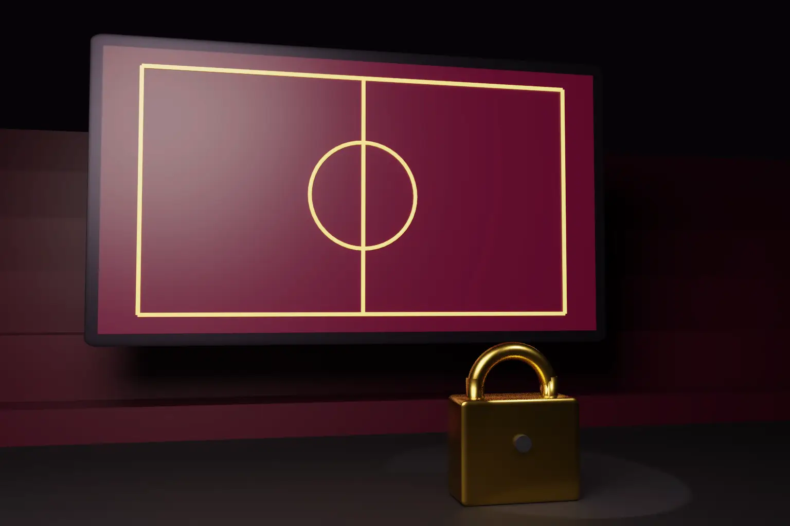

A live match loses most of its value within hours. On 1 October 2026 the Delhi High Court used that fact to let a rights holder block new pirate sites in real time. It acts by notice, during the term of its licences.
The case is Sporta Technologies Pvt Ltd v John Doe & Ors, CS(COMM) 989/2026. Sporta runs the FanCode streaming service. Justice Purushaindra Kumar Kaurav decided an application, I.A. 27375/2026, to make an earlier injunction work faster.
- FanCode holds exclusive Indian streaming rights under seven agreements, including Formula 1, ATP, Copa del Rey and USGA events.
- An ex parte injunction of 10 September 2026 had already blocked named rogue sites and their mirrors.
- The new order lets FanCode email new sites, mirrors, redirects and subdomains straight to registrars, hosts, ISPs, DoT and MeitY.
- Registrars and hosts must suspend or lock, and ISPs must block, in real time and in any event within 24 hours.
- DoT and MeitY must issue their notifications within 36 hours.
- The court kept its own final say. Intermediaries act on the court's order, not on their own judgment of infringement.
Background
FanCode sued unknown persons running rogue streaming sites. The defendants included rogue sites such as westreamf1.st and istreameast.cx, and several pages.dev subdomains. They also included Cloudflare, a hosting provider, many ISPs, the Department of Telecommunications (DoT) and the Ministry of Electronics and Information Technology (MeitY).
On 10 September 2026 the court granted an ex parte injunction. Registrars and hosts had to suspend the domains within 24 hours and disclose the registrants' KYC details within six weeks. ISPs had to block the sites and their mirrors. But the order had a gap. It gave no quick route to deal with new sites found during a live event.
What the court decided
Why ordinary procedure fails for live events
The court noted that a pirate site can reappear under a new name within minutes. A fresh court application for each new site takes days. By then the match is over and the harm is done. The court said that a remedy which arrives after the event defeats the purpose of the injunction.
Building on earlier Delhi decisions
The court traced how Delhi has developed this remedy.
- UTV Software v 1337X.To (2019). This set out the factors for finding a rogue website. Rights holders could also add mirror sites to a decree under Order I Rule 10 of the Code of Civil Procedure.
- Universal City Studios v Dotmovies.Baby (2023). This introduced the "Dynamic+" injunction, which can cover later copies of the plaintiff's works. Extending it still needed an application before the Joint Registrar.
- Star India v Jiolive.tv (2023) and Star India v Terrimeridooriyan.com (2024). These allowed real time notice for cricket events, supported by an affidavit.
The court also cited the caution in HBO v Streamzy.to (2026). Intermediaries should not decide questions of infringement for themselves. The court's order, not the notice, gives them the authority to act. This keeps the order in line with section 79 of the Information Technology Act, 2000 and with Shreya Singhal v Union of India (2015).
The directions
The court allowed FanCode to notify any new website, mirror, redirect, alphanumeric variant, subdomain or URL that makes the protected events available in India. No fresh application is needed. Each notice must give the URL, the event, and the date and time of detection. It must attach screenshots or recordings and, where available, the IP address.
Registrars and hosts must then suspend or lock the domain. ISPs must disable access. Each must act in real time and in any event within 24 hours. DoT and MeitY must issue blocking notifications within 36 hours.
Limits of the order
The order is tied to FanCode's licensed events and the term of its agreements. It does not let FanCode block any site it dislikes. Each notice must show that the site actually makes the protected events available.
The burden falls on the rights holder to get the evidence right. A wrongly notified site can return to court. The court kept its supervisory role, so a party affected by a notice can still seek relief.
How the UK, the EU and the US compare
- United Kingdom. Section 97A of the Copyright, Designs and Patents Act 1988 lets the High Court order ISPs to block infringing services. In Football Association Premier League Ltd v British Telecommunications plc [2017] EWHC 480 (Ch), the court granted the first live blocking order. It targeted streaming servers only while matches were being played.
- European Union. Article 8(3) of the InfoSoc Directive 2001/29/EC requires member states to allow injunctions against intermediaries. On 4 May 2023 the European Commission adopted a Recommendation on combating online piracy of sports and other live events. It encourages dynamic injunctions and action within the live window. It is not binding.
- United States. There is no general federal statute that lets courts order ISPs to block foreign pirate sites. Rights holders rely on DMCA takedown notices, suits against operators, and domain seizures in criminal cases. A bill to change this, the American Copyright Protection Act, was introduced in September 2026. It has not been enacted.
India's approach now sits close to the UK's live blocking model. The difference is that Delhi lets the rights holder notify new targets directly, within a court supervised framework.
Our note on design infringement and the eye test covers another recent Indian enforcement decision.
Practical steps for rights holders
- Seek a dynamic injunction before the season starts, not after the first match.
- Build a monitoring team that can capture screenshots, recordings and IP addresses during each event.
- Keep a log of every notice, with the time of detection and the time of action.
- Name the registrars, hosts, CDNs and ISPs as parties, so the order binds them.
- Ask for KYC disclosure from registrars. It can lead to the real operators.
Our copyright services cover enforcement and online takedowns in India and abroad.
Frequently asked questions
What is a dynamic injunction?
It is an order that covers not only the sites named in the suit but also later mirrors and copies of them. It saves the rights holder from filing a new suit for each new site.
Must FanCode go back to court for each new pirate site?
No. Under the 1 October 2026 order, FanCode can email the notice directly to the intermediaries and the government departments. The court still supervises the process.
How fast must ISPs block a notified site?
In real time and in any event within 24 hours. DoT and MeitY must issue their notifications within 36 hours.